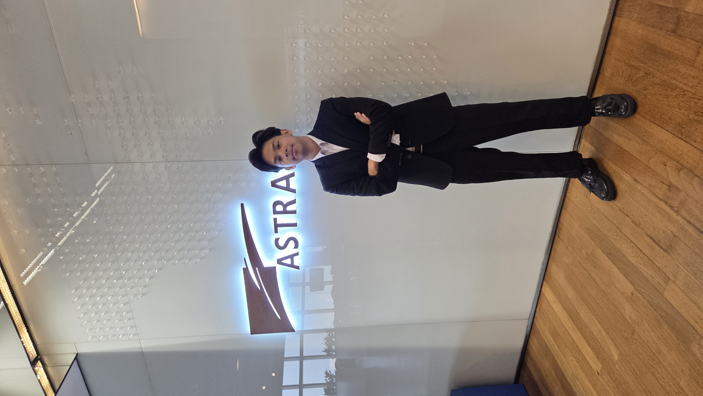
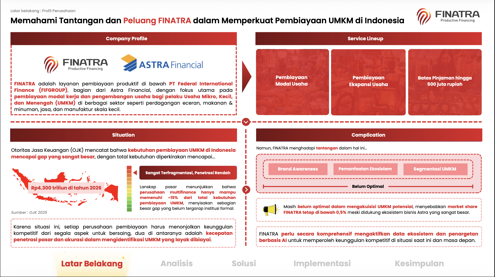
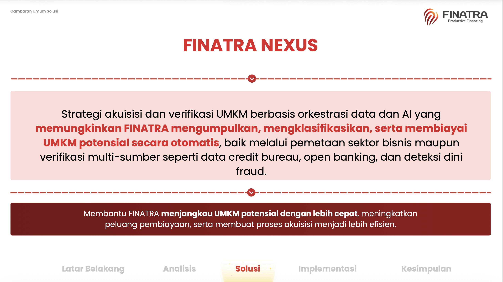
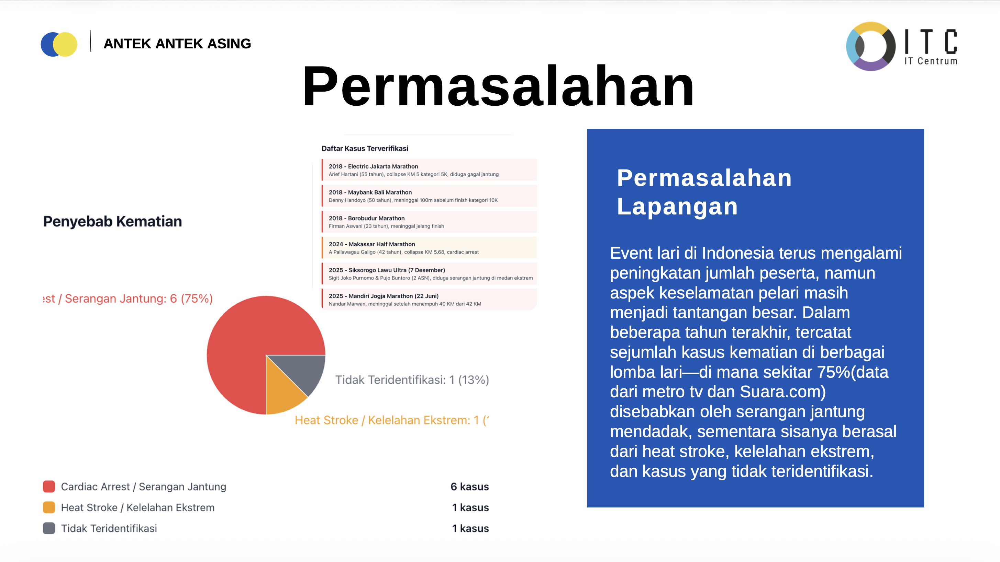
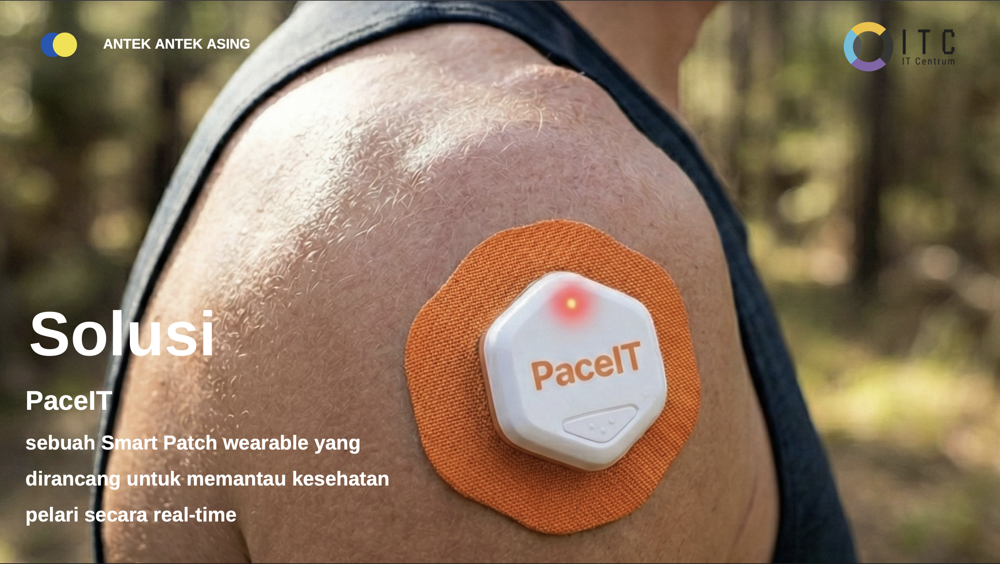

Tentang saya

Saya mahasiswa Program Studi Informatika Universitas Islam Indonesia. Saya tertarik pada pengembangan web, khususnya bagian tampilan, karena di sana keputusan teknis langsung terlihat hasilnya.
| Kegiatan | Peran | Waktu |
|---|---|---|
| Asisten Laboratiorium ITSC | Asisten Laboratorium Mata kuliah Logika Pemrograman | |
| Lomba | Peserta | |
| Kepanitiaan Mahasiswa | Koordinator |
Karya saya
- Astranauts 2026 by PT Astra Internasional Tbk. — FINATRA NEXUS (Ide bisnis untuk perusahaan Astra)
- Startup Hackathon IT Centrum 2025 — PaceIT (Pengembangan prototype bisnis membuat Alat kesehatan untuk para pelari)
- Expo Semester 2 — Aplikasi desktop untuk memudahkan kasir dalam mengelola menu.
Hubungi saya
Isi formulir berikut. Semua kolom bertanda wajib harus diisi.
Galeri Karya
-


Astranauts 2026 by PT Astra Internasional Tbk. -


Startup Hackathon by IT Centrum 2025
Tanya jawab
Apa yang sedang saya pelajari?
CSS dan cara menyusun tampilan yang konsisten lewat token.
Mengapa memilih Informatika?
Saya tertarik dengan teknologi dan ingin mempelajari cara membuat solusi menggunakan perangkat lunak.
Perjalanan saya
- — mulai kuliah di Informatika UII.
- — pertama kali mengikuti lomba UI/UX
- — pertama kali memenangkan lomba business plan